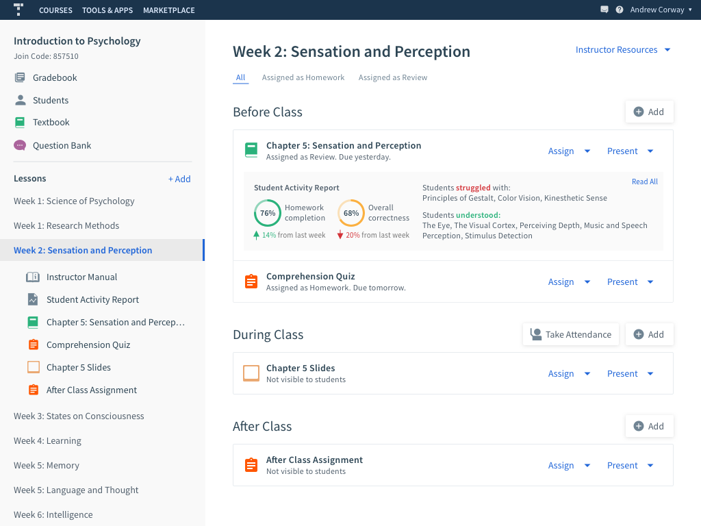
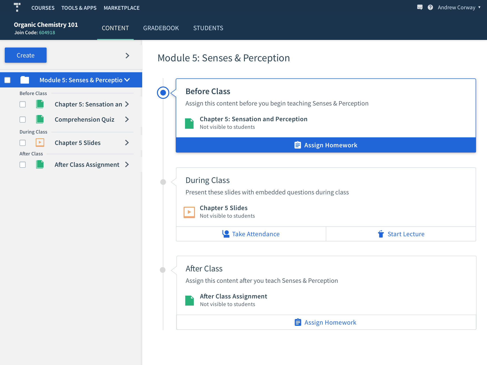
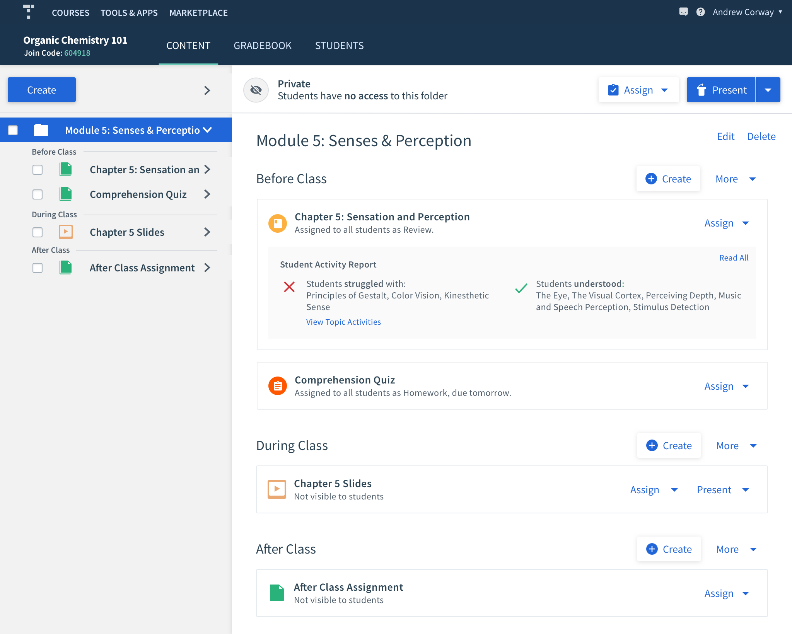
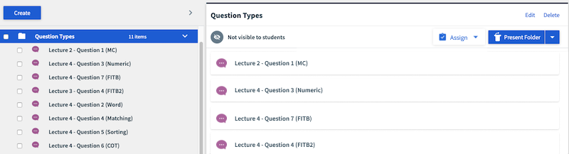
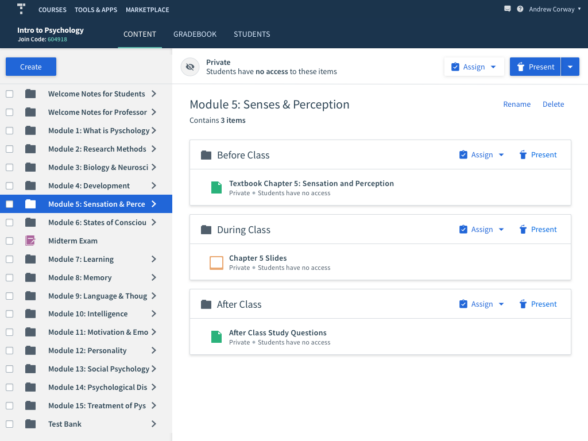
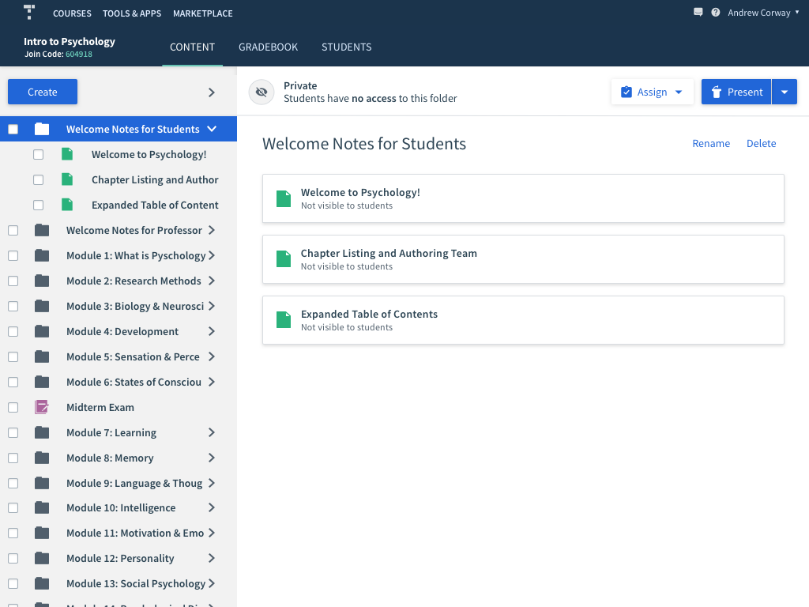
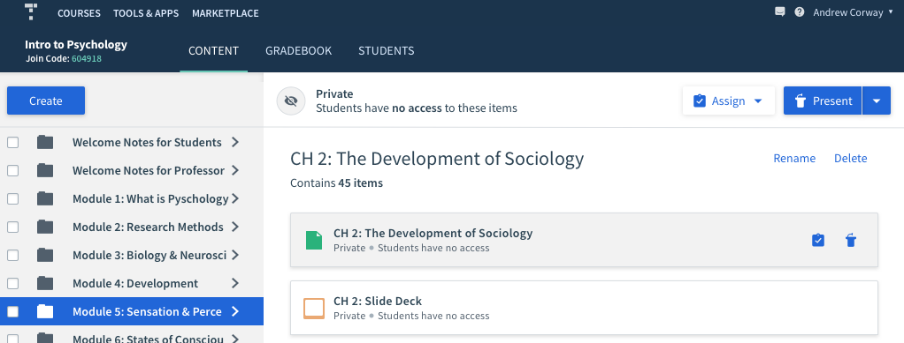
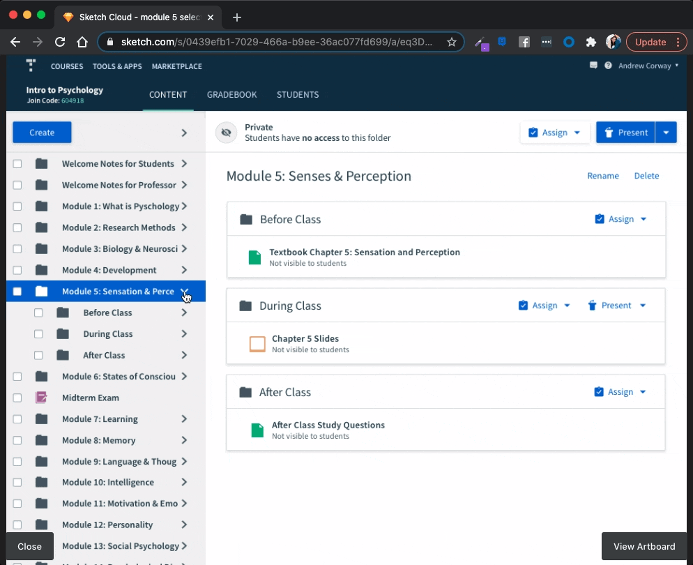
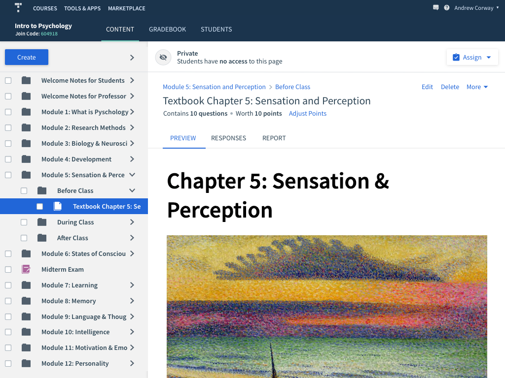
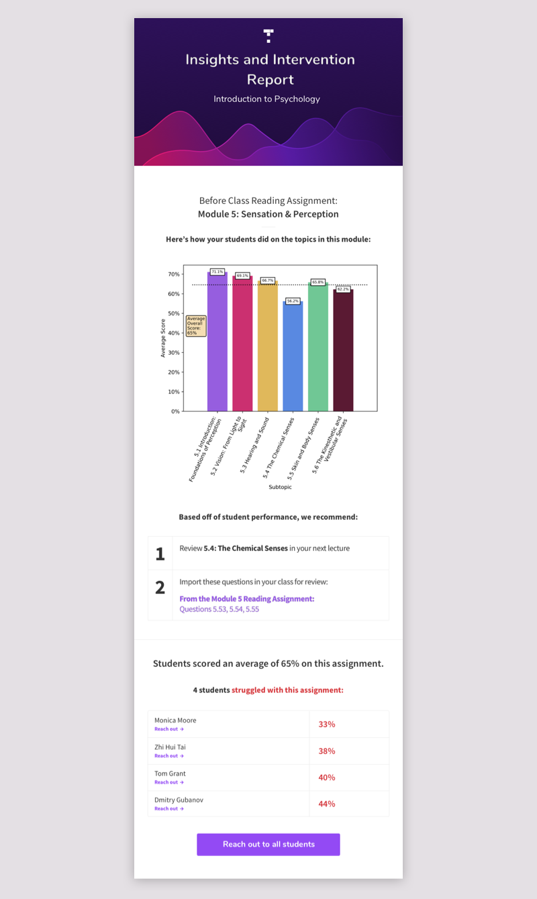

From textbooks to full course solutions
Top Hat had an innovative online textbook offering, but it was not competitive enough with traditional publishers. Professors expected more than a textbook: they were used to receiving supporting lecture materials, assignments, assessments, and instructor resources alongside it.
The books were also difficult to sell alongside the rest of Top Hat because the content did not fit seamlessly into a professor’s existing course workflow.
The product direction was to stop thinking about these as standalone textbooks and start selling complete course solutions organized around a Before, During, and After Class framework.
Key hypotheses to test
The framework gives professors readings to assign before class, lecture material to use during class, and homework to assign afterward.
If instructors could see where students struggled in the reading, they could adapt the upcoming lecture and spend more time on the concepts students had not understood.
User research exposed a product problem
The content team assembled a few weeks of material in the new format and used it to pitch the idea to professors. The content itself tested well, but putting that much material into a Top Hat course exposed a major issue: the existing navigation had not been designed to handle large amounts of structured content.
Professors liked the offering, but they found the course difficult to navigate and were not grasping the Before, During, and After Class setup in its existing form.
It became clear that selling the Intro Course successfully would require product changes, not just better content.
Exploring the ideal experience
Before solving for the existing platform, I wanted to understand whether the underlying ideas were strong. I quickly designed an idealized version of a course that made the BDA framework and student-comprehension insights explicit.
We used this concept in interviews to separate two questions: did professors value the new course model, and could the current Top Hat UI communicate it effectively?

The Module Lobby
Research suggested that instructors needed one place where they could see and interact with everything associated with a module. We called this concept the “Module Lobby.”
To continue testing the idea before committing to implementation details, I explored multiple blue-sky versions of what that lobby could be.


Making it work in Top Hat
Once the Module Lobby concept was validated, I needed to find a solution that worked within Top Hat’s existing product and also benefited professors who would never adopt an Intro Course.
I decided to build around folders. Each course module could be a folder containing subfolders for Before Class, During Class, and After Class. The existing folder-preview area could then become a useful Module Lobby rather than introducing an entirely separate navigation model.
The old folder experience
The old folder preview was extremely limited. Selecting a folder in the content tree simply listed its contents on the right; those items were not navigable and users could not perform meaningful actions from the preview.

Redesigning folder previews
I redesigned the preview to clearly expose nested folders and their contents. Instructors could navigate directly from the pane and assign or present material without first finding the same item again in the narrow content tree.

The same component also needed to work for normal folders without nested BDA structure. In that case, the content is simply listed directly.

I also added quick actions on hover so instructors could assign or present content without opening it first.

Improving course navigation
Previously, every folder in the content tree expanded by default. That was manageable in a small course, but disastrous once an Intro Course contained dozens of modules and subfolders. Users had to manually collapse the tree just to make it navigable.
I changed the model so folders begin collapsed in a new session. A professor can select a module and use the much larger preview pane to navigate its contents, while still expanding the tree manually when they want that level of detail.

Breadcrumbs preserve context
Once instructors could navigate deeply through the preview pane, they needed a reliable way back up the hierarchy. I added breadcrumbs above the title and kept the content tree in sync with the user’s location so they could always understand where they were in the course.

Testing Student Insights
The second major hypothesis was that comprehension data could make the course more useful to professors. Instead of immediately investing in a full in-product analytics experience, we chose a deliberately lightweight first iteration.
Professors received the insights manually by email. This let us validate which data was useful, observe how instructors changed their teaching because of it, and iterate quickly before committing engineering time to a permanent product surface.

Validation and results
We first tested the navigation internally to remove obvious usability problems, then tested with professors — both existing Top Hat users and instructors who had not used the platform. The redesigned navigation proved intuitive and let users reach their goals quickly.
We continued validating the BDA framework and Insights Report in the real teaching environment: professors received the reports, we attended classes to observe how the information affected their lectures, and we sat in on sales demos throughout the process to hear how prospective customers reacted to the offering.
The strongest validation was commercial: the sales win rate for these textbooks increased from 10% to 20%.